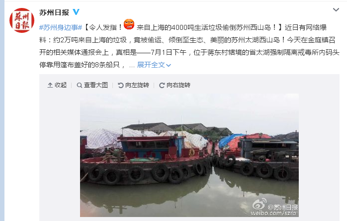
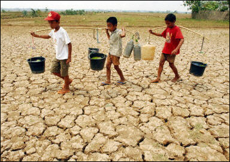
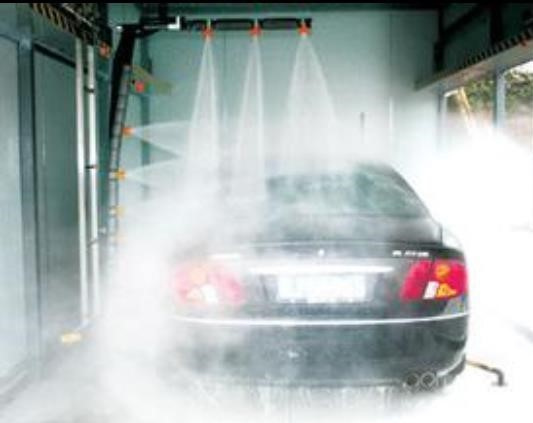
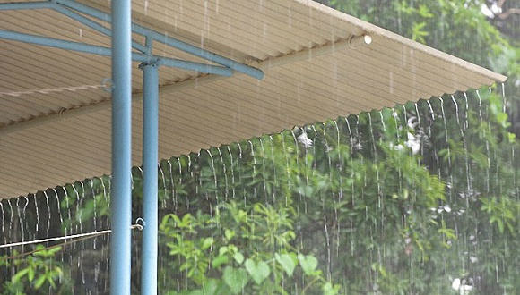
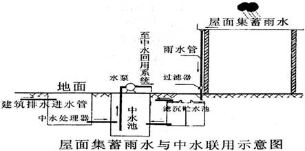
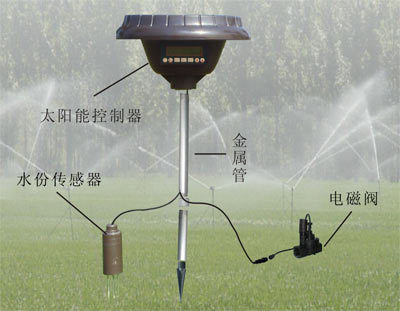
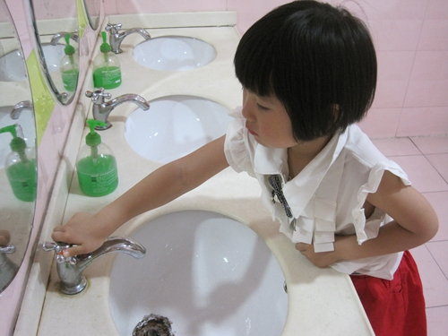
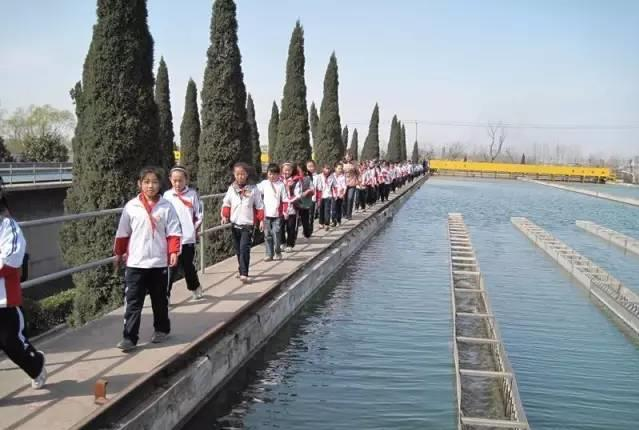

互惠动态
|
|
那些触动我们心灵的声音，你听到了吗？
水是生命的源泉，它滋润了万物，哺育了生命。
我们赖以生存的地球有百分之七十是被水覆盖着，而其中百分之九十七为海水，与我们生活关系最为密切的淡水却只有百分之三，而淡水中又有百分之七十八为冰川淡水，很难利用。
目前，水资源开发利用中的供需矛盾日益加剧，首先是农业干旱缺水。随着经济的发展和气候的变化，中国农业，特别是北方地区农业干旱缺水状况加重，干旱缺水成为影响农业发展和粮食安全的主要制约因素；改革开放以来，城市缺水愈来愈严重。同时，农业灌溉造成浪费水，工业用水浪费也很严重，城市生活污水浪费惊人。
而4000吨来自上海的生活及建筑垃圾欲在苏州太湖西山违规倾倒时被当场抓获。测算显示，相关垃圾总重量超过2万吨。细节之处，更是触目惊心、不忍直视。

在中国这么严重缺水的情况下，这样破坏水源真是让人痛心！
每年，很多地方都会因水源缺少而导致的干旱灾害，一些地方吃水都很困难，一边却为了利益浪费严重。

再看中国最浪费水之一洗车行业：
1吨水大概可以洗8辆车，无循环用水清水随意浪费！
据报道，普通洗车店平均每天洗车50辆左右，节假日，数量还要上升。1吨水大概可以洗8辆车，那么洗车店每天的用水量则在6吨左右，一个月就要用掉自来水200吨。而且洗车基本用自来水。洗车行浪费水，已经成了一个不争的事实。据业内人士介绍，一家洗车行按照每天洗车40台，1台车耗0.25吨水来计算，按照保守估计哈市1000家洗车行每天就要消耗1万吨水。洗车点每天产生的废水90%以上都可以循环使用，这就意味着这些洗车行每天消耗掉的1万余吨水，有9000余吨可以循环使用，但都白白浪费掉。

在世界都在呼吁保护环境、保护水资源的时候，我们在做什么？
对比一下国内，国外人是怎么做节约水资源的？
印度作为一个缺水大国，一年中有半年的时间气温在30摄氏度以上，高温酷暑、干燥少雨，生活在这里的印度人养成了节水意识。在印度，人们收集雨水，有很多人直接从屋顶收集雨水，导入院内的储水池，经过一个雨季储满后，就可以满足一年的饮水需求。
鼓励收集雨水是许多印度地方政府的一贯方针。在一些贫穷的边远地区，当地政府通过居民筹资、政府部分投资和非政府组织捐资等手段，为农民修建了不少雨水收集设施。一些大型的雨水接收装置还有社区专人管理，统一分配用水。为了节约用水，印度中央政府专门成立了水资源部，对全国的水资源统一管理和调配。


美国家庭如何节约用水？美国环保署从改变不良用水习惯和使用节水产品着眼提出措施，考虑到家庭用水的各个环节。节水的原则主要是：不用水的时候勿让水空流；自来水管道系统有任何渗漏要及时修理，减少浪费。美国家庭和孩子平时不会开着水龙头刮胡子和刷牙；尽量缩短淋浴时间；打肥皂和抹香波的时候关上水龙头；盆浴时浴缸半满就可以了。厨房节水的办法有：把水果和蔬菜放在盆里洗；用手洗碗时，在洗涤槽内充水漂洗。
家用节水产品主要类型是水龙头、淋浴喷头、马桶和洗衣机。美国国会1992年立法要求所有在美国出售的马桶必须达到一次耗水量不超过1.6加仑的标准。目前，美国制造的淋浴喷头要求每分钟水流量不超过2.5加仑。在美国已很普遍的滚筒洗衣机是美国家庭洗衣节水的推荐产品。所以在衣服服方面特别节约。

保护水资源、节约用水的观念，在日本已经深入人心，在日常生活和生产活动中早已化作从我做起的实际行动。在家庭生活中，日本人很注意节水。日本电视台曾播放过节水的节目，如洗完菜后要注意先关水龙头，然后再把菜放好，而不是先把菜放好再来关水龙头；做油炸食物后锅里沾满了油，洗起来很费水，要先用纸把油擦净后再用水洗，这样既可以节约用水，又可以减少对水源的污染。同时，吸了油的纸作为可燃垃圾，燃烧时可增加回收的热量。
总之，日本人节水注意到家庭的每位成员，包括自己孩子，日本人节水不仅仅是为省钱，而是在尽自己的社会责任。每个人都是社会的一员，在满足个人需要的同时，必须考虑是否有利于社会，这样才能形成良好的社会环境。节约用水于己有利，同时也有益于社会的可持续发展，对个人来说是举手之劳，对全社会来说关系到人类的未来。

而在国外，这样的教育更是早早就开始了。
国外青少年节约教育的成功经验——把节约教育列入学校教育培养目标。当今世界各国政府都非常重视节约资源，学校的节约教育在国外得到普遍的重视，一些国家把节约教育明确列入学校的培养目标，而且在教材中融入节约教育的内容，让学生在学习时，潜移默化地接受节约教育。
新加坡
《中小学公民课程及训练纲要》小学德育目标的八条规定中，就有“阐明我国的环境及经济发展情况，确知勤劳节俭、努力生产，可以促进生活的改善和国家的繁荣”的条文。同时，新加坡各学校都订有严格的校规，许多校规中都有“食物和饮料必须在餐厅内用完”“严禁浪费水电”等条款。新加坡小学阶段开设的《生活与成长》和《好公民》等课程，都把勤俭节约、爱惜公物。
新加坡政府把节水列入了小学教科书的公共课程。每年，政府有关职能部门都要针对各个年龄层次的民众，采取不同的形式，进行节水宣传活动。学校带领学生参观水厂和节水中心，举办节水知识演讲。

英国
他们和孩子讲述垃圾分类。例如哪些可以回收利用。平时尽量选择绿色出行，鼓励清洁能源，多步行，少开车，减少洗车的次数，无形中也可以锻炼孩子的身体。
他们还会带着孩子去动物园，让孩子和动物成为好朋友，让孩子从小喜欢小动物，保护小动物。另外，也会带孩子去种植了，去感受植物的成长过程，让孩子了解自然生物规律。
父母会带孩子去参加户外活动，激发他们保护地球的兴趣。他们也从来不让孩子用一次性的筷子和杯子，他们都会自己带一个水杯出门。

关于互惠，您了解得够多么？
请外国学生来家庭照顾孩子，辅导孩子外语？
只了解这些是不够的！
获取更多信息请参考以下方式：
联系ASC：
电话：86-21-61116069(上海中心）
86-25-66065662（南京中心）
手机：15601666586（可加微信）
Q Q：3259637585
微信：asc-center
邮箱：info@asc-center.com
网站：www.asc-aupair.com

感谢您对我们的关注